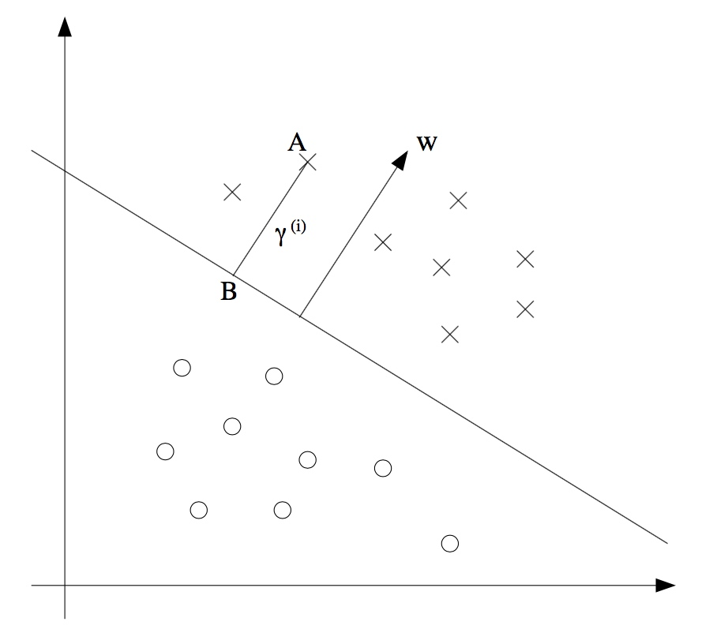
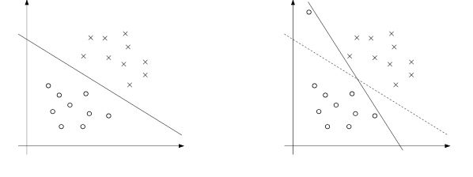
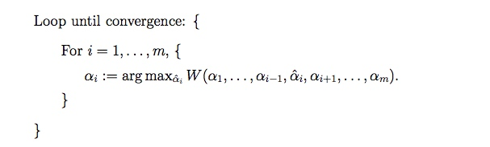
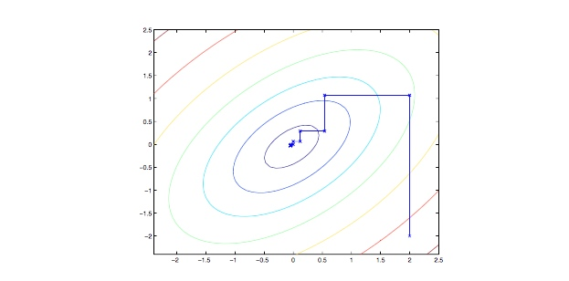
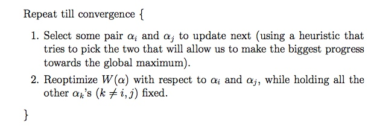
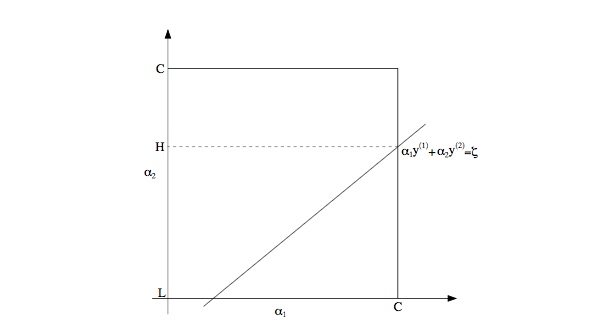
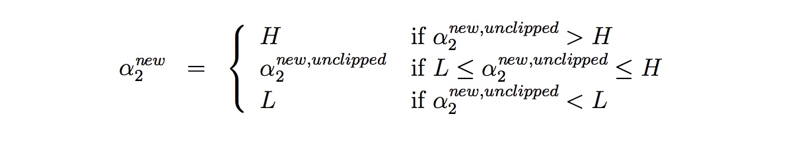

SVM
CS229 对于 SVM 的理论解释是我学习到的最详细也是最好的一份资料了，对比对象有周志华《机器学习》、《机器学习实战》、Coursera 上的 Machine Learning 等。相当推荐学习 CS229。
分类间隔 (Margin) 和 SVM 的优化目标『最大化分类间隔』这里就不多说了，很好理解，主要还是记录 CS229 中学到的新内容。一个数据点离分类边界 (decision boundary) 越远，则确信度越高。我们的优化目标也相当于寻找一个远离所有数据点的分类边界，当然，前提是这个分类边界得到的分类都正确。
SVM 的一些特殊定义也提及一下，
- \(y\) 的取值不是 \(\{0,1\}\) 而是 \(\{-1,1\}\)。
- 假设函数 \(h_{w,b}(x) = g(w^Tx+b)\) 中，我们把截距项单独写出来，便与后续的计算。
- 我们的分类器输出结果会直接是 1 或 -1，不像 Logistic 回归那样先输出 \(y\) 是某一类的概率。
函数间隔和几何间隔 (Functional and geometric margin)
函数间隔 \(\hat{\gamma}\) 的定义如下
\[\hat{\gamma}^{(i)} = y^{(i)}(w^Tx+b)\]
\[\hat{\gamma} = \min_{i=1,\cdots,m} \hat{\gamma}^{(i)}\]
函数间隔，是所有数据点的函数输出中的最小值，函数间隔越大，说明这个点分类的自信越高。但是可以发现，我们等比例放大参数 \(w\) 和 \(b\) 的数值大小，可以使得函数间隔变大，并且分类间隔直线的位置并不会移动。于是我们又定义了几何间隔

注意图中的点 A，我们需要求 A 到分类边界的距离 \(\gamma^{(i)}\)，就是我们现在需要求的值。
因为 A 代表着 \(x^{(i)}\)， 所以我们可以得到点 B 的公式为 \(x^{(i)} - \gamma^{(i)} \cdot w/\|w\|\)，并且点 B 在分类边界上，我们有 \(w^Tx+b=0\)，因此
\[w^T\left(x^{(i)}-\gamma^{(i)}\frac{w}{\|w\|}\right)+b=0\]
\[\gamma^{(i)} = \frac{w^Tx^{(i)}+b}{\|w\|} = \left(\frac{w}{\|w\|}\right)^Tx^{(i)}+\frac{b}{\|w\|}\]
再把函数的正负性考虑进去，最终我们得到
\[\gamma^{(i)} = y^{(i)}\left(\left(\frac{w}{\|w\|}\right)^Tx^{(i)}+\frac{b}{\|w\|}\right)\]
注意如果 \(\|w\| = 1\)，则函数间隔等于几何间隔——这给了我们一个联系起这两种间隔的思路。并且，几何间隔并不受参数的等比缩放影响，这个特性在后面的推导中很有用。比如说我们在拟合 w 和 b 的时候，我们需要对他进行一个缩放以满足 \(\|w\| = 1\) 这个约束，那么我们并不需要担心几何间隔会因此改变。
最后，对于一组大小为 m 的训练集，我们同样定义
\[\gamma = \min_{i=1,\cdots,m}\gamma^{(i)}\]
最优间隔分类器 (Optimal margin classifier)
当我们假设数据是线性可分的时候，也就是存在一个超平面能够将正类和负类分隔开，这时我们如何找到这个最大化集合间隔的分类器呢，有以下优化问题
\[\begin{eqnarray}
\max_{\gamma,w,b}&&\gamma \nonumber \\
s.t. & &y^{(i)}(w^Tx^{(i)}+b)\geq \gamma,i=1,\cdots,m \nonumber \\
&&\|w\|=1 \nonumber \\
\end{eqnarray}\]
我们限制了 \(\|w\|=1\)，所以几何间隔和函数间隔此时是相等的。因此，解决这个优化问题，我们能够求出对于这个训练集最大的几何间隔。但是，"\(\|w\|=1\)“ 这个限制不怎么友好（non-convex），我们无法套用现成的优化求解算法来解决它，所以我们尝试把它变形一下
\[\begin{eqnarray}\max_{\hat{\gamma},w,b} &&\frac{\hat{\gamma}}{\|w\|} \nonumber \\
s.t. && y^{(i)}(w^Tx^{(i)}+b)\geq \hat{\gamma},\ \ i=1,\cdots,m \nonumber \\
\end{eqnarray}\]
现在我们尝试最大化 \(\hat{\gamma}/\|w\|\)，这个优化问题和上面的那个是等价的，并且我们成功抛弃掉了那个不友好的限制条件。但是，现在变成我们的目标函数不怎么友好了 (non-convex)。
让我们继续尝试变形。回想起我们能够随意等比例缩放 \(w,b\)，这非常关键。我们限制\(\hat{\gamma}=1\)，则我们的优化目标可以变为最大化 \(\hat{\gamma}/\|w\| = 1/\|w\|\)，也就相当于最小化 \(\|w\|^2\)
\[\begin{eqnarray}
\min_{\gamma,w,b} &&\frac{1}{2}\|w\|^2 \nonumber \\
s.t. && y^{(i)}(w^Tx^{(i)}+b)\geq 1,\ \ i=1,\cdots,m \nonumber \\
\end{eqnarray}\]
现在我们终于将问题转化为一个能够使用现成计算包解决的优化问题了。上面的优化问题是一个凸二次优化问题，并且只有一个线性约束。但是相比使用现成计算包直接解决这个优化问题，我们还有一个解决办法，并且解决过程中还引出了更加重要的 kernel 概念。
拉格朗日对偶问题
原始问题
有『等式约束条件』和『不等式约束条件』下的优化问题，能够通过拉格朗日方法，转换为无约束的拉格朗日函数优化问题。
比如说
\[\begin{eqnarray}
\min_w && f(w)\nonumber \\
s.t. &&g_i(w) \leq 0, \ \ i=1,\cdots,k\nonumber \\
&&h_i(w)=0, \ \ i=1,\cdots,l \nonumber \\
\end{eqnarray}\]
通过引入拉格朗日乘数 \(\alpha_i, \beta_i\) ，我们能够得到拉格朗日函数
\[\mathcal{L}(w,\alpha,\beta) = f(w) + \sum^k_{i=1}\alpha_ig_i(w)+\sum^l_{i=1}\beta_i h_i(w)\]
此时，若我们对拉格朗日函数求最大值的优化问题
\[\theta_{\mathcal{P}}(w) = \max_{\alpha,\beta:\alpha_i \geq 0} \mathcal{L}(w,\alpha,\beta)\]
我们发现，当 \(h_i(w)\) 等于零的时候，即 \(w\) 的取值符合原函数约束时，拉格朗日函数等于原函数；当\(w\) 的取值不符合原函数约束时，即 \(h_i(w)\) 不等于零的时候，总能通过使 \(\beta_i\) 等于正无穷或负无穷，使得 \(\theta_{\mathcal{P}}(w)\) 等于正无穷。
\[\theta_{\mathcal{P}}(w) = \left\{
\begin{array}{ll}
f(w) &若 w 满足原问题约束 \\
\infty &其他 \\
\end{array}
\right.\]
利用这个性质，我们再对 \(\theta_{\mathcal{P}}(w)\) 函数化为最小值的优化问题，则得到
\[\min_w \theta_{\mathcal{P}}(w) = \min_w \max_{\alpha,\beta:\alpha_i \geq0} \mathcal{L}(w,\alpha,\beta)\]
求解这一个优化问题，我们就将得到在满足原问题约束条件下，对于原目标函数 \(f(w)\) 的最小值优化问题的解，因为不符合约束条件的参数会使得函数变为正无穷，从而被符合约束条件的参数筛选掉。
\[\min_w \max_{\alpha,\beta:\alpha_i \geq0} \mathcal{L}(w,\alpha,\beta)\]
这个优化问题，就称为拉格朗日函数的原始问题 (primal problem)。
对偶问题
那么，对偶问题是什么呢。可以看到，原始问题中有两个最值优化步骤。将这两个最值优化步骤对调一下顺序，就成为了拉格朗日函数的对偶问题 (dual problem)
我们称，原始问题最终求得的最优解为 \(p^*\)，对偶问题的最优解为 \(d^*\)。我们很容易想到
\[d^* = \max_{\alpha,\beta:\alpha_i \geq0} \min_w \mathcal{L}(w,\alpha,\beta) \leq \min_w \max_{\alpha,\beta:\alpha_i \geq0} \mathcal{L}(w,\alpha,\beta) = p^*\]
并且，在一定条件下，我们有
\[d^* = p^*\]
KKT 条件
若满足以下假设，必定存在 \(w^*, \alpha^*, \beta^*\) 是原始问题的解。
1. 函数 \(f\) 和 \(g_i\) 都是凸函数
2. \(h_i\) 函数是仿射函数（\(h_i\) 满足 \(h_i(w) = a_i^Tw+b_i\) 形式，称 \(h_i\) 为仿射函数 (Affine)）
并且，若 \(w^*, \alpha^*, \beta^*\) 同时满足 KKT 条件，则此解同时是对偶问题和原始问题的解。
\[\begin{eqnarray}
\frac{\partial}{\partial w_i}\mathcal{L}(w^*,\alpha^*,\beta^*) &=& 0,i=1,\cdots,n \\
\frac{\partial}{\partial \beta_i}\mathcal{L}(w^*,\alpha^*,\beta^*) &=& 0,i=1,\cdots,l \\
\alpha_i^*g_i(w^*) &=& 0, i=1,\cdots,k \\
g_i(w^*) &\leq& 0, i=1,\cdots,k \\
\alpha^* &\geq& 0, i=1,\cdots,k \\
\end{eqnarray}\]
回到最优间隔分类器问题
现在，我们尝试使用拉格朗日方法来解决我们的最优间隔分类器优化问题
\[\min_{\gamma,w,b} \frac{1}{2} \|w\|^2\]
\[s.t.\ \ y^{(i)}（w^Tx^{(i)} +b)\geq 1,\ i=1,\cdots,m\]
我们将约束条件化为以下形式
\[g_i(w) = -y^{(i)}(w^Tx^{(i)}+b) + 1 \leq 0\]
则我们根据 KKT 条件中的公式(3)得知，只有当函数间隔恰好等于 1 时，\(g_i(w) = 0\)，\(\alpha_i\) 才有可能大于0. 我们称 \(\alpha_i > 0\) 的数据点为支持向量 (support vectors)，也就是支持向量机的名称由来。并且支持向量的数量一般远少于训练集样本数量，这是后续算法优化的一个很重要的特性。
我们求出原优化问题的拉格朗日函数
\[ \begin{equation} \mathcal{L}(w,b,\alpha) = \frac{1}{2}\|w\|^2-\sum^m_{i=1}\alpha_i[y^{(i)}(w^Tx^{(i)}+b)-1] \end{equation} \]
我们求解对偶问题，首先使用 \(w,b\) 为参数，求解拉格朗日函数的最小值。则我们求函数分别对于 \(w,b\) 的偏导数并使其等于零
\[\nabla_w\mathcal{L}(w,b,\alpha) = w-\sum^m_{i=1}\alpha_iy^{(i)}x^{(i)}= 0\]
\[ \begin{equation} w=\sum^m_{i=1}\alpha_iy^{(i)}x^{(i)} \end{equation} \]
\[ \begin{equation} \frac{\partial}{\partial b}\mathcal{L}(w,b,\alpha) = \sum^m_{i=1} \alpha_iy^{(i)}=0\end{equation} \]
然后我们将他们代入原拉格朗日函数中，进行下一步最值求解
\[\mathcal{L}(w,b,\alpha) = \sum^m_{i=1}\alpha_i - \frac{1}{2}\sum^m_{i,j=1}y^{(i)}y^{(j)}\alpha_i\alpha_j(x^{(i)})^Tx^{(j)}\]
需要注意的是，此时 KKT 条件中的公式(5)，以及刚刚求出的公式(8) 成为了现在的最值优化问题的新约束。则我们得到
\[\begin{eqnarray}
\max_a &&W(\alpha) = \sum^m_{i=1}\alpha_i-\frac{1}{2}\sum^m_{i,j=1}y^{(i)}y^{(j)}\alpha_i\alpha_j\langle x^{(i)},x^{(j)}\rangle \nonumber \\
s.t. && \alpha_i \geq 0,\ \ i=1,\cdots,m \nonumber \\
&&\sum^m_{i=1}\alpha_iy^{(i)} = 0 \nonumber \\
\end{eqnarray}\]
最终我们求出 \(\alpha_i\) 的最优值，代入到公式(7) 求得 \(w\) 的最优值，再将 \(w, \alpha_i\) 代入原拉格朗日函数公式(6) 中，求得
\[ \begin{equation} b^* = -\frac{\max_{i:y^{(i)}=-1}w^*Tx^{(i)} + \min_{i:y^{(i)}=1} w^{*T}x^{(i)}}{2} \end{equation} \]
则此时我们已经求得了我们原优化问题的最优解，可喜可贺。
核 (Kernels)
还能有什么优化的地方？我们的分类器的可用性还存在一个前提，数据必须线性可分。如果线性不可分呢？我们引入了『核』的概念，用来对输入数据进行一个特征转换。我们定义特征函数
\[\phi(x) = \begin{bmatrix}
x\\
x^2\\
x^3
\end{bmatrix}\]
回头看我们的公式(7)，如果将它代入到我们的假设函数 \(w^Tx+b\) 中，我们得到
\[\begin{eqnarray}
w^Tx+b &=& \left( \sum^m_{i=1}\alpha_iy^{(i)}x^{(i)} \right)^Tx+b \\
&=& \sum^m_{i=1}\alpha_iy^{(i)}\langle x^{(i)}, x\rangle +b \\
\end{eqnarray}\]
将假设函数转化成了输入数据和所有支持向量的点积的形式（\(\langle x^{(i)},x\rangle\) 指 \(x^{(i)}\) 和 \(x\) 的点积），于是我们就可以将这个点积替换成一个特征向量的点积了。
我们再定义一个关于 \(x^{(i)}\) 和 \(x\) 的函数 \(K(x,z)\)
\[K(x,z) = \phi(x)^T\phi(z)\]
这个函数，我们就称为核函数。我们现在只需要将公式(11)中的点积替换成核函数，我们的 SVM 就可以处理非线性可分的数据集了。
为什么我们使用核函数，而不是直接套用特征向量的点积呢？让我们看下面一个例子
\[K(x,z) = (x^Tz)^2\]
也可以写成下面这个形式
\[\begin{eqnarray}
K(x,z) &=& \left(\sum^n_{i=1}x_iz_i \right) \left(\sum^n_{j=1}x_jz_j \right) \nonumber \\
&=&\sum^n_{i=1} \sum^n_{j=1}x_ix_jz_iz_j \nonumber \\
&=&\sum^n_{i,j=1}(x_ix_j)(z_iz_j)\nonumber \\
\end{eqnarray}\]
化为特征向量点积的形式，我们可以得到这个核函数对应的特征向量是这个形式的
\[\phi(x) = \begin{bmatrix}
x_1x_1\\
x_1x_2\\
x_1x_3\\
x_2x_1\\
x_2x_2\\
x_2x_3\\
x_3x_1\\
x_3x_2\\
x_3 x_3
\end{bmatrix}\]
我们可以发现，直接使用特征向量点积，计算复杂度为 \(O(n^2)\)，而核函数形式的计算复杂度仅为 \(O(n)\)。所以使用核函数，能够大幅优化计算复杂度。
那么，是否所有的函数都能作为核函数呢？当然不是。
假设 \(K\) 是一个合法核函数，并定义核函数矩阵 \(K_{ij} = K(x^{(i)},x^{(j)})\)。
则有 \(K_{ij} = K(x^{(i)},x^{(j)}) = \phi(x^{(i)})^T\phi(x^{(j)}) = \phi(x^{(j)})^T\phi(x^{(i)}) = K(x^{(j)},x^{(i)}) = K_{ji}\)
所以，核函数矩阵必须是对称的
然后，我们使用一个任意向量 \(z\)，有
\[\begin{eqnarray} z^TKz &=& \sum_i\sum_jz_iK_{ij}z_j \nonumber \\
&=&\sum_i\sum_jz_i \phi(x^{(i)})^T \phi(x^{(j)}) z_j \nonumber \\
&=&\sum_i\sum_jz_i \sum_k \phi_k(x^{(i)}) \phi_k(x^{(j)}) z_j \nonumber \\
&=&\sum_k\sum_i\sum_j z_i \phi_k(x^{(i)}) \phi_k(x^{(j)}) z_j \nonumber \\
&=&\sum_k\left(\sum_i z_i\phi_k(x^{(i)})\right)^2 \nonumber \\
&\geq& 0 \nonumber
\end{eqnarray}\]
所以，核函数矩阵是半正定的。
需要注意的是，核函数的概念并不是专门为 SVM 提出的，它的概念比 SVM 要广得多。实际上你可以将任何学习算法中的点积替换成核函数，就能使得这个学习算法支持高维度特征学习。
正则化
我们的分类器一直以来都有一个限制条件，那就是分类边界必须能够正确的分类所有的样本。我们知道现实中的样本，绝大部分都存在着噪音数据。如果出现了噪音数据，就会导致 SVM 的分类边界很不合理，如下图所示

为了解决这个问题，我们加入了一个 \(l1\) 正则项：
\[\begin{eqnarray}
\min_{\gamma,w,b} &&\frac{1}{2}\|w\| ^2+C\sum^m_{i=1}\xi_i \nonumber \\
s.t. && y^{(i)}(w^Tx^{(i)}+b)\geq1-\xi_i,i=1,\cdots,m \nonumber \\
&& \xi_i\geq0,\ i=1,\cdots,m \nonumber \\
\end{eqnarray}\]
这使得样本的函数间隔能够小于1 （甚至为负数）。其中的参数 \(C\) 代表了两个目标权重的权衡：
- 使所有样本的函数间隔大于1
- 最小化 \(\|w\|^2\)
\(C\) 越大，则优化目标越偏向目标1，即最原始的，强迫所有样本必须分类正确的模型。
在新的优化目标下，我们的 KKT 条件有一点改变：
\[\begin{eqnarray}
\alpha_i = 0 &\Rightarrow& y^{(i)}(w^Tx^{(i)}+b)\geq1 \\
\alpha_i = C &\Rightarrow& y^{(i)}(w^Tx^{(i)}+b)\leq 1 \\
0<\alpha_i <C &\Rightarrow& y^{(i)}(w^Tx^{(i)}+b) = 1 \\
\end{eqnarray}\]
SMO 算法
SMO 算法全称 Sequential minimal optimization，提供了一种有效的方法来解决 SVM 的对偶问题。在介绍 SMO 算法之前，我们先了解另一个算法。
坐标上升算法 (Coordinate ascent)
假设你正在尝试解决一个无约束优化问题
\[\max_aW(\alpha_1,\alpha_2,\cdots,\alpha_m)\]
新算法逻辑如下：

可以看到在循环的最里层，我们固定了除了 \(\alpha_i\) 以外的所有参数，然后仅通过 \(\alpha_i\) 来优化函数 \(W\)。以下是一个坐标上升算法实战中的情形

SMO
这是我们准备解决的对偶优化问题：
\[\begin{eqnarray}
\max_\alpha &&W(\alpha) = \sum^m_{i=1}\alpha_i -\frac{1}{2}\sum^m_{i,j=1}y^{(i)}y^{(j)}\alpha_i\alpha_j\langle x^{(i)},x^{(j)}\rangle \\
s.t. &&0\leq \alpha_i \leq C,\ \ i=1,\cdots,m \\
&&\sum^m_{i=1}\alpha_iy^{(i)}=0 \\
\end{eqnarray}\]
假设我们使 \(\alpha_i\) 都符合公式(16)、(17)的约束。现在，如果我们将 \(\alpha_2,\cdots,\alpha_m\) 都固定，并使用坐标上升算法来尝试优化目标函数，你觉得这能产生效果吗？并不能。因为我们有一个约束是这样的
\[ \alpha_1y^{(1)} = -\sum^m_{i=2}\alpha_iy^{(i)}\]
两边同乘以 \(y^{(1)}\)
\[\alpha_1 = -y^{(1)}\sum^m_{i=2}\alpha_iy^{(i)}\]
因此，如果你固定了 \(\alpha_2,\cdots,\alpha_m\)，实际上你也固定了 \(\alpha_1\)。所以如果我们需要通过 \(\alpha_i\) 来优化目标函数，我们需要同时使用其中的两项来进行优化，也就是我们 SMO 算法的主要思想

我们使用 SMO 算法有一个重要的原因，那就是 \(\alpha_i, \alpha_j\) 的计算非常简单。
首先，我们通过计算剩余项的和，可以写出以下约束
\[\alpha_1y^{(1)}+\alpha_2y^{(2)}=-\sum^m_{i=3}\alpha_iy^{(i)}\]
使等号右边等于一个常数 \(\zeta\)，则我们有
\[ \begin{equation}\alpha_1y^{(1)}+\alpha_2y^{(2)} = \zeta \end{equation} \]
并且，根据新的 KKT 条件公式(12-14) \(\alpha_i\) 的取值范围被固定在了 \([0,C]\)，则我们可以画出以下图像

并且根据公式(18) ，我们发现能够将原优化目标写成以下形式的二次函数
\[a\alpha_2^2 + b\alpha_2+c\]
则我们先计算得出 \(\alpha_2\) 的最优值，再根据上图的值域限制进行一个修剪 (clip)

以此得到符合限制条件的新 \(\alpha_2\) 值。